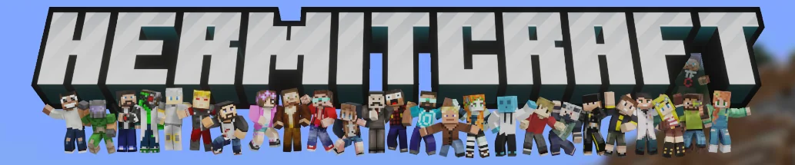

Counts every time a word or phrase is said in the selected Hermits' episodes, and lists each moment with a link straight to it.
Try:

Loading…
Counts every time a word or phrase is said in the selected Hermits' episodes, and lists each moment with a link straight to it.